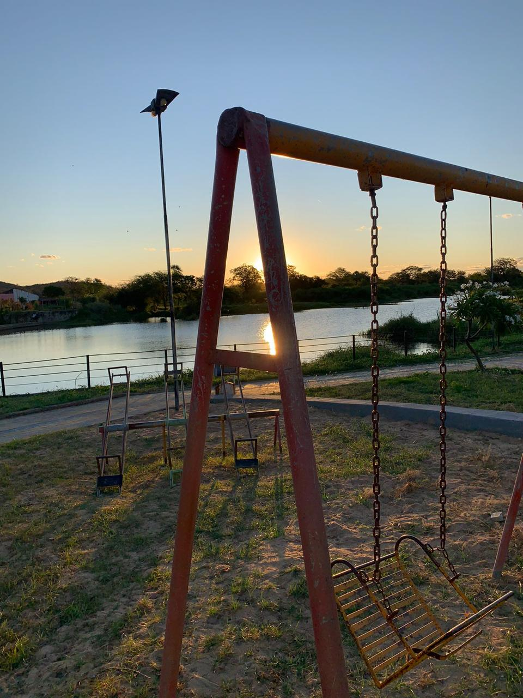
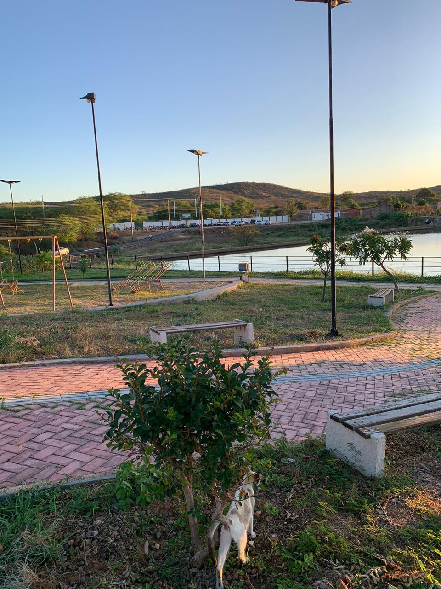
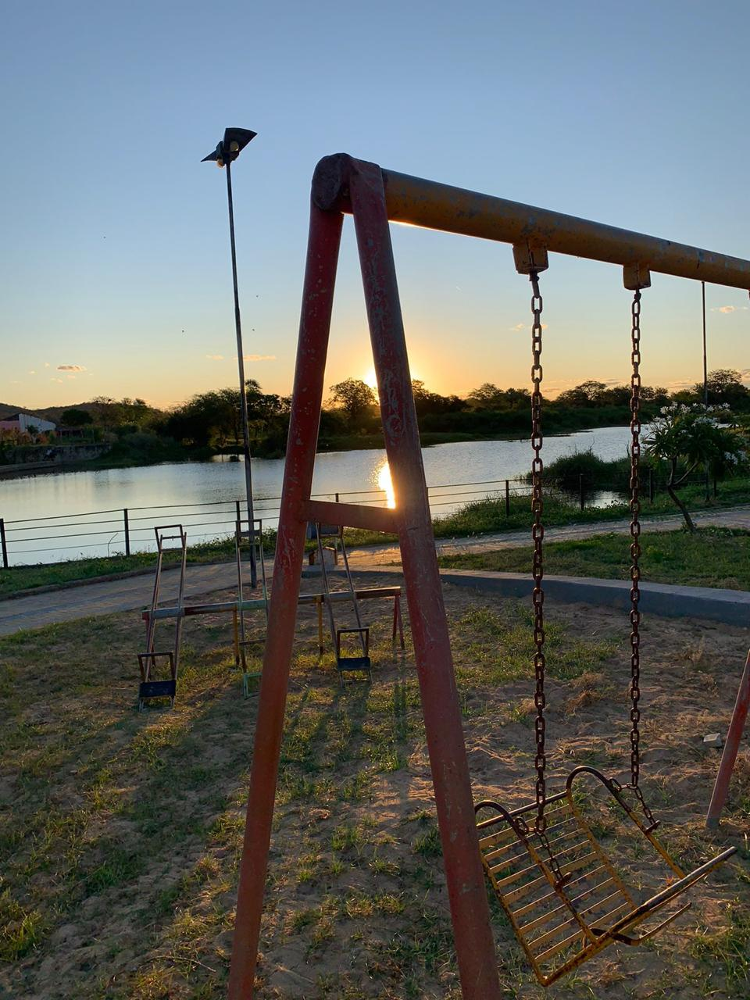
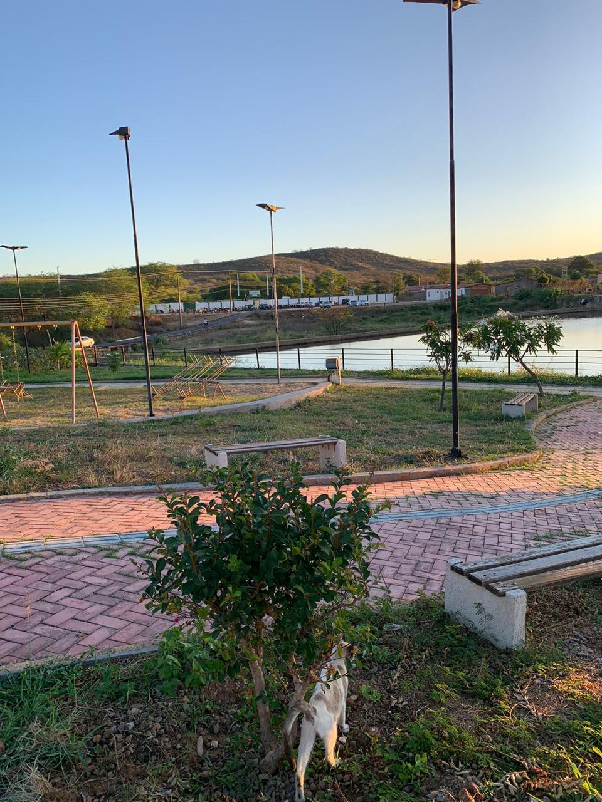
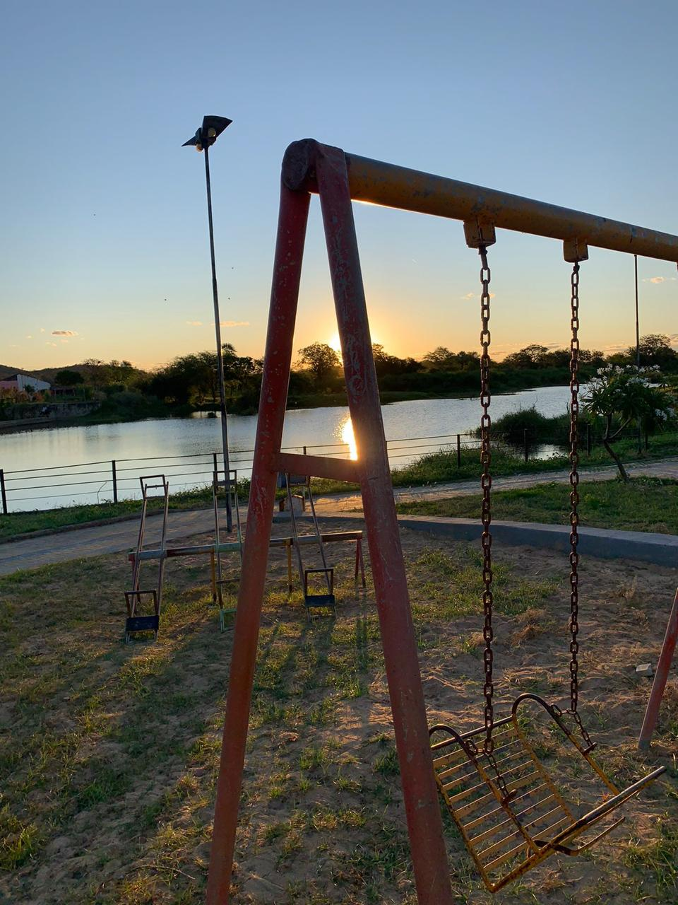
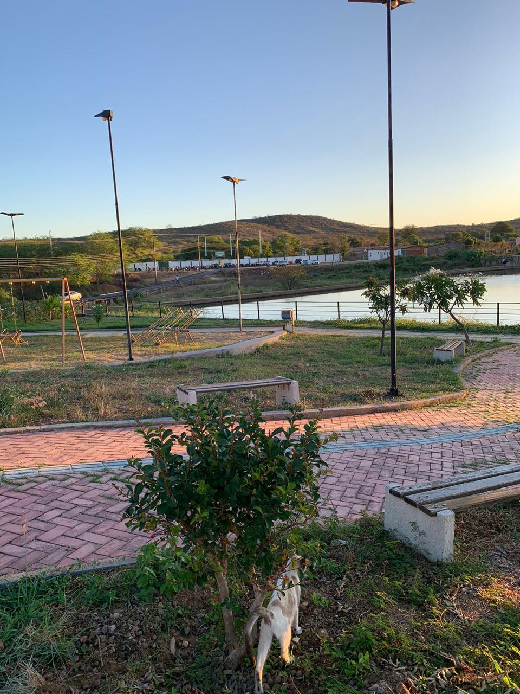

A Apracinha da Barragem em Pio IX, no Piauí, é um espaço público bastante conhecido e frequentado pelos moradores locais e visitantes. Localizada próxima à barragem da cidade, a apracinha é um ponto de encontro e lazer para diversas atividades ao ar livre.
Geralmente, apracinhas como essa são projetadas para oferecer um ambiente agradável, com áreas verdes, bancos, brinquedos para crianças, e algumas vezes até estruturas esportivas como quadras de esporte ou pistas de caminhada. Elas têm como objetivo proporcionar momentos de descontração e integração entre as pessoas da comunidade.

